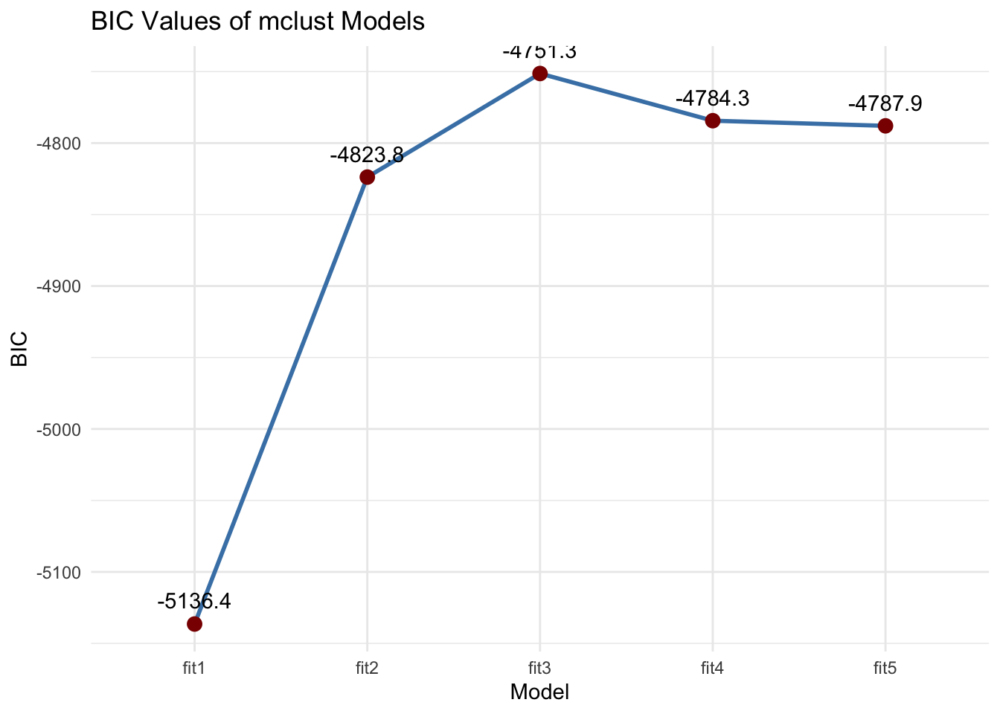
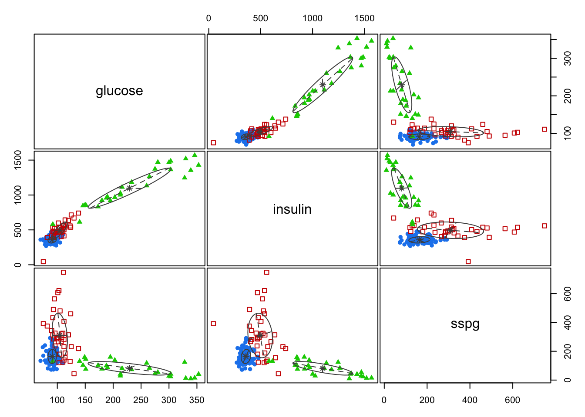
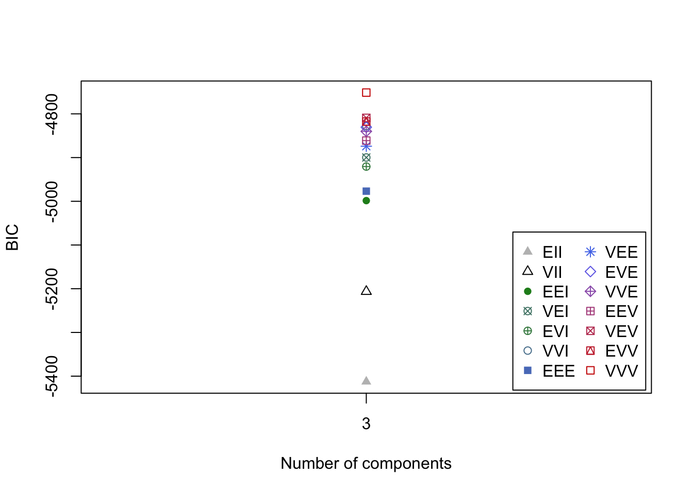
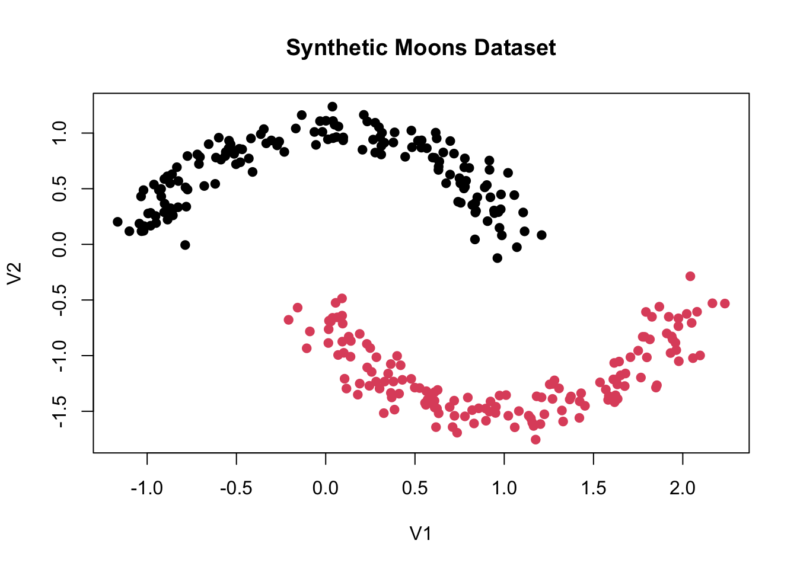

class glucose insulin sspg
1 Normal 80 356 124
2 Normal 97 289 117
3 Normal 105 319 143
4 Normal 90 356 199
5 Normal 90 323 240
6 Normal 86 381 157GMM with mclust
Gaussian mixture modelling
In this lab, we are going to figure out how we can apply Gaussian mixture models using the R-package mclust.
Question 1
Load the package and inspect the dataset diabetes.
As you can see, this dataset consists of 3 indicator variables, and one variable with class assignments. Since we are trying to find the classes ourselves, we are removing this variable for now.
dat <- diabetes[,-1]Question 2
Fit a GMM with 1, 2, 3, 4 and 5 clusters.
Question 3
Evaluate the model fit of the different models, for example by comparing the bic values. Which model do you select?
library(ggplot2)
# Extract BIC values
# Combine your models into a list
models <- list(fit1, fit2, fit3, fit4, fit5)
# Extract BIC values
bic_values <- sapply(models, function(model) model$bic)
# Create a data frame for plotting
model_names <- paste0("fit", 1:5)
bic_df <- data.frame(Model = model_names, BIC = bic_values)
# Plot the BIC values
ggplot(bic_df, aes(x = Model, y = BIC, group = 1)) +
geom_line(color = "steelblue", linewidth = 1) +
geom_point(size = 3, color = "darkred") +
geom_text(aes(label = round(BIC, 1)), vjust = -1) +
labs(title = "BIC Values of mclust Models",
x = "Model",
y = "BIC") +
theme_minimal()
Question 4
For the 3-class model, we now dive deeper into the the options for restricting the covariance matrices. First, we figure out what parametrization has been used in our 3-class model. We can do this using fit3$modelName.
fit3$modelName[1] "VVV"Can you explain what parametrization has been used here?
Question 5
Check if you can recognize the parameterization when plotting the model.
plot(fit3, what = "classification")
Question 6
See how the plot changes if you change the parameterization. Play around with different parameterizations.
Question 7
mclust tries out all parameterizations given a number of clusters, compares the model fit using BIC and selects the best fitting parametrization. Compare the fit of the parameterizations. Which parameterization had the second best fit? And which parametrization had the worst fit?
plot(fit3$BIC)
Question 8
You can even compare model fit of all parameterization options for models with multiple numbers of clusters.
Here, we can see that the parametrization might have been different if a different number of clusters was chosen. What would for example have been the best parameterization for a 4-class model?
Cluster merging
We will now play around with the concept of cluster merging. We do this be replicating the moon example we saw in the lecture.
First, we define a function for creating moon data.
make_moons <- function(n_samples = 300, noise = 0.1) {
# Half samples per moon
n <- floor(n_samples / 2)
# First moon (top)
theta1 <- runif(n, 0, pi)
x1 <- cbind(cos(theta1), sin(theta1))
# Second moon (bottom, shifted)
theta2 <- runif(n, 0, pi)
x2 <- cbind(1 - cos(theta2), -sin(theta2) - 0.5)
# Combine moons
X <- rbind(x1, x2)
y <- c(rep(1, n), rep(2, n))
# Add Gaussian noise if specified
if (noise > 0) {
X <- X + matrix(rnorm(length(X), sd = noise), ncol = 2)
}
return(list(X = as.data.frame(X), y = factor(y)))
}And we now create a dataset using this function. With the plot, we can confirm that the data actually has the moon shapes as we wanted.
set.seed(123)
moons <- make_moons(n_samples = 300, noise = 0.1)
X <- moons$X
y <- moons$y
# Visualize
plot(X, col = y, pch = 19, main = "Synthetic Moons Dataset")
Question 9
Search for a cluster model with the optimal number of clusters on this dataset.
Question 10
How many clusters does this model have?
Question 11
What parameterization does this model use?
Question 12
Fit a model with 1 cluster less compared to your model in question 10. Plot this model to see what has changed compared to the previous model.
Question 13
Continue to remove 1 cluster at a time, and review what happens in the cluster distribution compared to the previous model. Stop when you replicated the two moons.
Question 14
Inspect the fit of the different models in more detail. How would you explain the differences in model fit between the models?